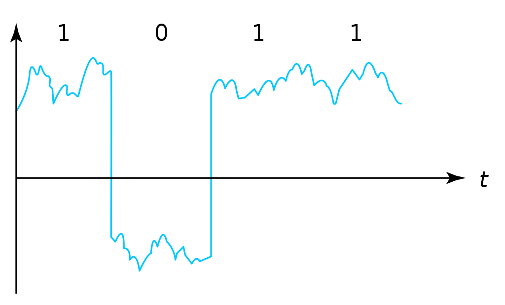

Indice
Tema 1 : Introducción a los Sistemas Digitales Electrónicos
-
Profesorado
-
Organización Académica
-
Programa
-
Prácticas
-
Ejercicios
-
Evaluación
-
Metodología
-
Profesorado
-
Profesor Cándido Aramburu Mayoz.
-
Doctor Ingeniero Telecomunicación (UPNA-Universidad Politécnica de Madrid)
-
Empresa Ikusi S.A. (Sistemas de Telemedida 1989)
-
Profesor Titular UPNA (Dpto Ingeniería Electrónica y Comunicaciones 2000)
-
-
Profesor Teoría: Carlos Juan de Dios
-
Profesor Prácticas: Andrés Garde
Organización Académica
Aulas y Horarios
-
Aulas
-
Teoría: G91 → A019, G1 →A113, G2→A122
-
Prácticas: P91→A015, P1→A305, P2→E-ISM, P3→E-ISM
-
E-ISM : Edificio “Las Encinas” , lado derecho entre la Biblioteca y el Rectorado) en el Sótano, Laboratorio de Informática “ISM”
-
-
Horario
-
Teoría: G91(L-15:00), G1(X-17:00), G2(L-17:00)
-
Prácticas: P91(X-19:00), P1(J-17:00), P2(M-19:00), P3(M-17:00)
-
Tutorías
-
Despacho: Edificio Los Tejos 2 Planta: Despacho 2028 (Prof. Candido Aramburu)
-
Miaulario → correo interno
-
-
Lunes (10-13) y Miércoles (10-13)
-
Programa de la Asignatura
-
-
Programa en 3 partes
-
C
-
C
-
Otros:
-
-
Bibliografía
-
Fundamentos de Electrónica Digital. Cecilio Blanco
Metodología
-
Trabajo en clase: principalmente Ejercicios con su teoría asociada
Prácticas
-
Tipo de prácticas:
Ejercicios
-
x
Evaluación
-
Sistema de Evaluación:
-
35% teoría , 35% prácticas, 15% programación en papel, 15% otros
-
Tema 2 : Arquitectura de Von Neumann
Indice
-
P
-
O
Qué conocemos de una computadora
-
CPU? 3GHz? RAM? Memoria? 12GB? Disco Duro? Tarjeta gráfica? Pantalla? Ethernet? Placa base?
-
Hardware, Software, Firmware? BIOS? Windows? Linux?
-
Cuál es su arquitectura? Qué se entiende por arquitectura?
Organización de una computadora: niveles
-
Los elementos básicos de una computadora desde el punto de vista del programador se pueden organizar por NIVELES:
-
del nivel más bajo y cercano a la máquina al nivel más alto y cercano al programador.
-

Organización de una computadora: llamadas
-
Cada nivel llama a un nivel inferior

Organización de un automóvil: concepto de Abstracción
-
Un símil sería la relación entre un conductor y el coche. El coche físico (motor,ventilador,ejes,inyector,válvulas,caja de cambios,etc…) se ABSTRAE y para el conductor un coche son unos pedales, una palanca de cambios y un volante. La Arquitectura del coche también se podría describir por niveles, del nivel más bajo al nivel más alto, al más abstracto.
-
El conductor conduce (programa) una máquina ABSTRACTA: acelera,frena,cambia y gira. No tiene por qué saber que la máquina real, la física, lleva aceite, ni siquiera tiene que saber que son necesarias unas ruedas.
-
Gracias a la abstracción las máquinas se acercan en su uso a los humanos.
-
Es necesario saber el QUE hace una máquina y no el COMO lo hace.
Organización de una computadora: ISA
-
El Hardware de la computadora tiene como función interpretar y ejecutar un conjunto de instrucciones con el objeto de procesar datos para obtener algún tipo de resultado.
-
lenguaje de la máquina : lenguaje binario
-
las instrucciones y los datos de la máquina están en lenguaje binario: 0,1
-
instrucciones máquina: P.ej sumar dos datos (números enteros) →
-
instrucción suma de 2 más 5 en código máquina: 0101010001000010101010101
-
misma instrucción máquina pero en lenguaje ensamblador (texto): add 2,5
-
La CPU mediante sus circuitos electrónicos digitales realiza la suma binaria de los dos datos binarios
-
-
-
I.S.A : Instruction Set Architecture
-
Arquitectura del Conjunto de Instrucciones máquina de una computadora
-
Conjunto: sumar, restar, mover un dato, saltar a una instrucción de memoria
-
Arquitectura:
-
instrucciones: qué operaciones? ¿cuál es el tamaño de una instrucción?¿cuantos operandos tiene?¿cuál es su código binario? ¿cómo se hace referencia a un operando?
-
datos: tipo de datos: enteros?reales? su tamaño? su codificación?
-
-
Organización de una computadora: ISA
-
El Hardware de la computadora tiene como nivel superior las instrucciones máquina que es capaz de ejecutar y los datos máquina que es capaz de ejecutar

Organización de una computadora: ISA
-
Un programador de bajo nivel , pej los creadores de sistemas operativos, de compiladores, etc…, necesitan conocer la ISA de la máquina.
-
La programación de un sistema operativo como Windows y Linux, en los lenguajes C y el lenguaje ensamblador, requiere conocer la arquitectura ISA.
-
Los manuales ISA de un microprocesador tienen toda la información que necesita el programador, por lo tanto el programador de bajo nivel no necesita conocer todo el hardware interno de la CPU, de la memoria y de los controladores de entrada salida, sino únicamente la información disponible en el manual ISA.
-
Para el programador la máquina es la ISA, el programador ve una máquina ABSTRACTA, ve la FUNCION de la máquina, QUÉ hace la máquina…y no COMO lo hace.
-
En el laboratorio programaremos en lenguaje del nivel más bajo, es decir, en el lenguaje de la máquina pero no en binario sino en modo texto mediante el lenguaje ensamblador. Las operaciones de las instrucciones de la máquina en lenguaje ensamblador se expresan mediante mnemónicos como ADD, SUB, LOAD, MOV … que son reducciones de palabras inglesas.
-
Buscar en google los manuales isa de intel x86 de 64 bits que son ejecutados por los microprocesadores de intel: core i3, core i5, core i7, etc…
Una máquina abstracta y muchas reales: compatibilidad
-
De la misma forma que cuan do aprendemos a conducir (pedales+cambio+volante) nos sirve para cualquier coche, la arquitectura del conjunto de instrucciones es la misma para múltiples procesadores.
-
La ISA amd64 ó x86-64 es la misma para todos los procesadores de Intel (core,xeon,etc…) o de AMD (Ryzen, etc). De esta forma un programa binario que se ejecute en un core-i7 también lo puede hacer en un Ryzen 9.
Programa en lenguaje texto: suma de los 5 primeros números enteros
-
Algoritmo \(\sum_{i=1}^{5}i\)
-
Lenguaje de texto Python
sum(range(5,0,-1))
Programa en lenguaje texto: suma de los 5 primeros números enteros
Lenguaje C
/*
Programa: sum1toN.c
Descripción: realiza la suma de la serie 1,2,3,...N
*/
#include <stdlib.h>
int main ()
{
short N=5,y;
while(N>=0)
y+=N--;
exit(y);
}Lenguaje Java
/* Programa Fuente: sum1toN.java
compilación: javac sum1toN.java -> genera el BYTECODE sum1toN.class
ejecución -> java -cp . sum1toN ; necesita el bytecode *.class y ejecutará el main de class
*/
public class sum1toN {
// método main encapsulado en la clase class, static para que main no pueda cambiar los atributos, publico para ser accesible.
public static void main(String[] args) {
System.out.println("Suma de Números enteros");
int x=5, suma=0;
while (x >= 0 ) {
System.out.print( x );
System.out.print(",");
suma=suma+x;
x--;
}
System.out.print("\n");
System.out.print("suma="+suma);
System.out.print("\n");
}
}Módulo binario: en código binario
gcc -o sum1toN sum1toN.c
-> genera el módulo ejecutable sum1toN para la arquitectura x86-64 +
ls -l sum1toN -> 16696 bytes
file sum1toN
sum1toN: ELF 64-bit LSB shared object, x86-64, version 1 (SYSV),
dynamically linked, interpreter /lib64/ld-linux-x86-64.so.2,
BuildID[sha1]=8df3de7b9ba05ceb7861b39d703c8ef11161284a, for GNU/Linux 3.2.0,
not strippedgcc -m32 sum1toM sum1toN.c
-> genera el módulo ejecutable sum1toN para la arquitectura x86-32
hexdump sum1toN
0000000 457f 464c 0102 0001 0000 0000 0000 0000
0000010 0003 003e 0001 0000 1060 0000 0000 0000
0000020 0040 0000 0000 0000 3978 0000 0000 0000
0000030 0000 0000 0040 0038programa ejecutable en código hexadecimal, más compacto que el binario
1ª columna: direcciones, apuntan o hacen referencia a un byte
2ª columna:
--- 4 dígitos hexadecimales del contenido. Si cada dígito hexadecimal equivale a 4 bits, dos dígitos hex. equivalen a 1 byte.
--- 457f: 2 bytes de código ejecutable
--- No podemos interpretar el código binario, pero el procesador x86-64 sí.
Interpretación del código binario (del programa sum1toN)
-
Desensamblador: convierte el código binario en código texto ENSAMBLADOR
-
objdump -d sum1toN
Disassembly of section .text: 0000000000001060 <_start>: 1060: f3 0f 1e fa endbr64 1064: 31 ed xor %ebp,%ebp 1066: 49 89 d1 mov %rdx,%r9 1069: 5e pop %rsi 106a: 48 89 e2 mov %rsp,%rdx 106d: 48 83 e4 f0 and $0xfffffffffffffff0,%rsp 1071: 50 push %rax 1072: 54 push %rsp 1073: 4c 8d 05 86 01 00 00 lea 0x186(%rip),%r8 107a: 48 8d 0d 0f 01 00 00 lea 0x10f(%rip),%rcx 1081: 48 8d 3d c1 00 00 00 lea 0xc1(%rip),%rdi 1088: ff 15 52 2f 00 00 callq *0x2f52(%rip) 108e: f4 hlt 108f: 90 nop ..... .................... ......................... 0000000000001149 <main>: 1149: f3 0f 1e fa endbr64 114d: 55 push %rbp 114e: 48 89 e5 mov %rsp,%rbp 1151: 48 83 ec 10 sub $0x10,%rsp 1155: 66 c7 45 fc 05 00 movw $0x5,-0x4(%rbp) 115b: eb 19 jmp 1176 <main+0x2d> 115d: 0f b7 45 fc movzwl -0x4(%rbp),%eax 1161: 89 c2 mov %eax,%edx 1163: 83 ea 01 sub $0x1,%edx 1166: 66 89 55 fc mov %dx,-0x4(%rbp) 116a: 89 c2 mov %eax,%edx 116c: 0f b7 45 fe movzwl -0x2(%rbp),%eax 1170: 01 d0 add %edx,%eax 1172: 66 89 45 fe mov %ax,-0x2(%rbp) 1176: 66 83 7d fc 00 cmpw $0x0,-0x4(%rbp) 117b: 79 e0 jns 115d <main+0x14> 117d: 0f bf 45 fe movswl -0x2(%rbp),%eax 1181: 89 c7 mov %eax,%edi 1183: e8 c8 fe ff ff callq 1050 <exit@plt> 1188: 0f 1f 84 00 00 00 00 nopl 0x0(%rax,%rax,1) 118f: 00
1ª columna: dirección de referencia a la instrucción
2ª columna: código máquina en hexadecimal
3ª columna: código de operación de la instrucción en lenguaje ensamblador
4ª columna: operandos de la instrucción en lenguaje ensamblador.
Lenguaje Ensamblador
-
Es el lenguaje máquina traducido del binario a TEXTO para poder programar módulos fuente los programadores
-
El formato de la instrucción ensamblador se compone principalmente de 2 campos:
-
campo del código de operación mediante MNEMONICOS como push(insertar),mov(mover),add(sumar),jmp(saltar),jne(saltar si not equal), etv
-
campo de los operandos de la operación: son referencias a memoria donde está el operando ó se pone el propio operando
-
Institute Advanced Machine (IAS)
-
-
Matemático húngaro 1903
-
Proyecto Manhattan → Bomba atómica
-
Concepto de Arquitectura von Neumann de un Computador
-
-
-
máquina ENIAC: programa cableado
-
máquina EDVAC: programa almacenado → *unidad de memoria
-
arquitectura von neumann: unidad de procesamiento + unidad de memoria + unidad de entrada salida
-
-
Repertorio de la máquina IAS: tabla
| Instruction name | Instruction name | Op Code | Description | Register Transfer Language (RTL) |
|---|---|---|---|---|
S(x)→Ac+ |
LOAD M(X) |
1 |
copy the number in Selectron location x into AC |
AC ← M[x] |
S(x)→Ac- |
LOAD -M(X) |
2 |
same as #1 but copy the negative of the number |
AC ← ~M[x]+1 |
S(x)→AcM |
LOAD |M(X)| |
3 |
same as #1 but copy the absolute value |
AC ← |M[x]| |
S(x)→Ac-M |
LOAD -|M(X)| |
4 |
same as #1 but subtract the absolute value |
AC ← AC-|M[x]| |
S(x)→Ah+ |
ADD M(X) |
5 |
add the number in Selectron location x into AC |
|
S(x)→Ah- |
SUB M(X) |
6 |
subtract the number in Selectron location x from AC |
|
S(X)→AhM |
ADD |M(X)| |
7 |
same as #5, but add the absolute value |
|
S(X)→Ah-M |
SUB |M(X)| |
8 |
same as #7, but subtract the absolute value |
|
S(x)→R |
LOAD MQ,M(X) |
9 |
copy the number in Selectron location x into AR |
|
R→A |
LOAD MQ |
A |
copy the number in AR to AC |
|
S(x)*R→A |
MUL M(X) |
B |
Multiply the number in Selectron location x by the number in AR. Place the left half of the result in AC and the right half in AR. |
|
A/S(x)→R |
DIV M(X) |
C |
Divide the number in AC by the number in Selectron location x. Place the quotient in AR and the remainder in AC. |
|
Cu→S(x) |
JUMP M(X,0:19) |
D |
Continue execution at the left-hand instruction of the pair at Selectron location x |
|
Cu`→S(x) |
JUMP M(X,20:39) |
E |
Continue execution at the right-hand instruction of the pair at Selectron location x |
|
Cc→S(x) |
JUMP+ M(X,0:19) |
F |
If the number in AC is >= 0, continue as in #D. Otherwise, continue normally. |
|
Cc`→S(x) |
JUMP+ M(X,20:39) |
10 |
If the number in AC is >= 0, continue as in #E. Otherwise, continue normally. |
|
At→S(x) |
STOR M(X) |
11 |
Copy the number in AC to Selectron location x |
|
Ap→S(x) |
12 |
Replace the right-hand 12 bits of the left-hand instruction at Selectron location x by the right-hand 12 bits of the AC |
||
Ap`→S(x) |
13 |
Same as #12 but modifies the right-hand instruction |
||
L |
LSH |
14 |
Shift the number in AC to the left 1 bit (new bit on the right is 0) |
|
R |
RSH |
15 |
Shift the number in AC to the right 1 bit (leftmost bit is copied) |
Repertorio de la máquina IAS: explicación
-
En la versión original no había código ensamblador, se programaba directamente en lenguaje máquina.
-
La 1ª columna: MNEMÓNICOS del lenguaje ensamblador del simulador académico IASSIM
-
En la 2ª columna, los MNEMONICOS (LOAD,ADD,SUB,etc) de las operaciones de las instrucciones se corresponden con los diseñados por el libro de texto de William Stalling.
-
La 3ª columna describe la instrucción mediante el lenguaje de texto convencional
-
La última columna describe la instrucción mediante un lenguaje de transferencia entre registros RTL
-
IAS de la máquina ISA
-
Analizamos la Arquitectura del Repertorio de Instrucciones de la máquina "Institute Advanced Studies"
-
Sólo tiene 16 instrucciones por lo que el procesador es muy sencillo.
-
Formato de las instrucciones
-
Tamaño fijo de 20 bit
-
la instrucción esta organizada en 2 campos: el campo de operaciones y el campo de operando
-
campo de operación: longitud de 8 bits → operaciones del tipo sumar,mover,saltar
-
campo de operando: longitud de 12 bits
-
Tema 3 : Representación Digital de la Información
Indice
-
Información: números, caracteres, imagen, sonido, etc ..
-
Números
-
Sistemas posicionales: base 10 (decimales), base 2 (binaria)
-
Naturales: bases 10,2,8,16 . Conversión entre bases
-
Enteros: Signo Magnitud, Complemento a la base-1, Complemento a la base
-
Operaciones aritméticas: Suma,Resta
-
Reales: coma fija y coma flotante
-
-
Caracteres
-
Alfanuméricos y Signos de Puntuación
-
ASCII standard y extendido
-
Unicode: UTF-8
-
Representación Científica y Prefijos de las Unidades
Prefijos |
Tera |
Giga |
Mega |
Kilo |
mili |
micro |
nano |
pico |
Base 10 → magnitudes:m,gr,Hz, .. |
1012 |
109 |
106 |
103 |
10-3 |
10-6 |
10-9 |
10-12 |
Base 2 → magnitudes: Byte |
212 |
29 |
26 |
23 |
2-3 |
2-6 |
2-9 |
2-12 |
-
Ejemplo: representar la magnitud=1000000000Hz debidamente
-
Notación científica → 109Hz
-
Debidamente: Notación científica con prefijos f=1GHz → T=1/f=10-9seg= 1ns
-
Señales: Conversión Analógica Digital
Analogica vs Digital
-
Señal Continua
-
Amplitud: \$oo\$ valores posibles en el rango
-
Tiempo: \$oo\$ valores posibles en el rango
-
-
Señal Discreta ó Digital
-
Amplitud: finitos valores posibles en el rango
-
Tiempo: finitos valores posibles en el rango
-
Señales : Muestreo y Cuantificación

Codificación

Calcular para las resoluciones de 3 bit y 16 bits cual es el mínimo incremento de señal codificable o error de cuantificación: con 3 bits el número de niveles es 23=8niveles y el mínimo relativo es 2-3=1/8; con 16 bits el número de niveles es 216 y el mínimo relativo es 2-16= 1/65536.
Representación de los números en código binario : [Tema2_RepInf]
Señales Binarias : Abstractas

Eje ordenada: valores abstractos (0/1, High/Low, ON/OFF, etc …).
Cronograma: Representación temporal de las señales digitales binarias.
Esa representación típica de los libros de texto, pizarra de clase, etc … es ideal ya que físicamente siempre habrá distorsión.
Señales Binarias : Físicas

Eje ordenada: magnitudes físicas (mV ó mA).
La señal física está distorsionada por causas como pej: línea larga de transmisión (efectos capacitivos e inductivos).
Un ejemplo típico de distorsión son los tiempos de subida y bajada, que no son nulos sino del orden de unos nanosegundos.
La distancia considerable entre los dos niveles (binario) a la entrada del receptor hace fácil la discriminación entre el '0' y el '1'.
Digitalización de las Señales
Ventajas
-
Calidad: Fácil de recuperar a pesar de la distorsión
-
Almacenamiento: Fiabilidad, Diversidad Formatos
-
Compatibilidad: Diversidad de Equipos (PC, móvil, coche, etc
-
Procesamiento: Sencillo, Flexible
-
Coste: Barato (componentes)
Abstracción
-
Niveles: el 0 y el 1
-
Lógica binaria
-
Matemáticas: Algebra de Boole
-
Representación de los Números
Representación de los Números Decimales
-
Decimal
-
10 dígitos : 0,1,2,3,4,5,6,7,8,9
-
Pesos con base 10 : 10n donde n es la posición del dígito dentro del número
-
-
Ejemplo: número 5421
Representación: |
los símbolos 5421 |
|||
Posiciones: |
3 |
2 |
1 |
0 |
Pesos: |
103 → 1000 |
102 → 100 |
101→10 |
100→1 |
Dígitos: |
5 |
4 |
5 |
1 |
Valores : ponderación |
5*1000=cinco mil |
4*100=cuatrocientos |
5*10=cincuenta |
1*1=uno |
Valor: |
5*1000+4*100+5*10+1= cinco mil cuatrocientos cincuenta y uno |
|||
Representación de los Valores Enteros en Código Binario
-
¿Número?¿Valor?¿Código?¿Representación?
-
2 dígitos : 0,1
-
Pesos con base 2 : 2n donde n es la posición del dígito dentro del número: ….-1024-512-256-128-64-32-16-8-4-2-1…
-
-
Ejemplo: número 0b1011
Representación: |
los símbolos 1011 |
|||
Posiciones: |
3 |
2 |
1 |
0 |
Pesos: |
23 → 8 |
22 → 4 |
21→2 |
20→1 |
Dígitos: |
1 |
0 |
1 |
1 |
Valores : ponderación |
1*8=ocho |
0*4=cero |
1*2=dos |
1*1=uno |
Valor: |
ocho+cero+dos+uno= once |
|||
Representación de los Valores Enteros en Código Binario
-
¿Cómo se representa en binario el valor 123.125? b1111011.001
-
¿Cómo se calcula el valor del número binario b1111011.001?
-
Parte Entera: divisiones sucesivas por la base 2
-
Parte Fracción: multiplicaciones sucesivas por la base 2
Representación de los Valores Enteros en Código Octal
-
Dígitos: 0,1,2,3,4,5,6,7
-
Posiciones y Pesos
-
¿Cómo se representa en octal el valor 123.125? 0o173.1
-
¿Cómo se calcula el valor del número octal 0o173.1?
-
Parte Entera: divisiones sucesivas por la base 8
-
Parte Fracción: multiplicaciones sucesivas por la base 8
Representación de los Números en Hexadecimal
-
Dígitos: 0,1,2,3,4,5,6,7,8,9,A,B,C,D,E,F _ el valor de A es 10, B→11, C→12, D→13, E-14, F→15
-
Posiciones y Pesos
-
¿Cómo se representa en hexadecimal el valor 123.125? 0x7B.2
-
¿Cómo se calcula el valor del número octal 0x7B.2?
-
Parte Entera: divisiones sucesivas por la base 16
-
Parte Fracción: multiplicaciones sucesivas por la base 16
Calculadora de Python
bin(123)
oct(123)
hex(123)
int(0b1111011)
int(0o173)
int(0x7B)Conversiones entre el sistema binario y sistemas con base potencia de 2
-
Conversión Binaria-Hexadecimal
-
base 16=24
-
grupos de 4 bits empezando por la dcha
-
b1111011 → 111 - 1011 → 0x7B
-
-
Conversión Hexadecimal-Binaria
-
grupos de 4 bits
-
-
Conversión Binaria-Octal
-
base 8=23
-
grupos de 3 bits empezando por la dcha
-
b1111011 → 1 - 111 - 011 → 0o173
-
-
Conversión Octal-Binaria
-
grupos de 3 bits
-
Suma binaria
-
Suma 10011011+00011011 = 10110110
Llevadas --> 1 1 1 1 1 0 0 1 1 0 1 1 <--sumando + 0 0 0 1 1 0 1 1 <--sumando Valor suma 1 0 1 3 2 1 3 2 <- ¿cómo se representan los valores de cada posición? *****************ase Resultado --> 1 0 1 1 0 1 1 0 <--suma -
LLEVADA
-
Valor suma: el valor 3 de la posición 1 → 3*2¹=6 → 110
-
el dígito 1 de la posición 1 es el resultado
-
el dígito 1 de la posición 2 es la LLEVADA
-
-
Conclusión:Cuando la suma en una posición específica tiene un valor es mayor o igual a la base hay que restar n veces la base y el valor n será la llevada a sumar en la posición siguiente.
-
Resta binaria
-
Resta 10110110 - 10011011 = 00011011
Sumar crédito al minuendo 2 2 2 2 1 0 1 1 0 1 1 0 <--minuendo - 1 0 0 1 1 0 1 1 <--sustraendo Sumar llevada al sustraendo 1 1 1 1 ************************* Resta 0 0 0 1 1 0 1 1 -
Cuando en una posición específica el minuendo es menor que el sustraendo se suma la base al minuendo antes de realizar la resta y se suma la llevada al sustraendo de la posición siguiente.
Aritmética Modular: la rueda

Representación binaria de números con 3 digitos.
23 : 8 combinaciones posibles,→ MODULO 8
Ejemplo: cuentakilómetros del coche.
Ejemplo: registro de 3 celdas → limitado a 8 combinaciones posibles.
¿Cual es la siguiente combinación a 111?, 111+1 = ¿ ?.
Calcular la representación del valor 33 en módulo 8 → Resto(33/8)=1 → en binario 001
33 pasos en la rueda equivale al número 001 → aritmética modular en módulo 8
Operaciones aritméticas: Octal y Hexadecimal
-
Base Octal
-
0o675+0o304 = 0o1201
-
0o632-0o374 = 0o236
-
-
Base hexadecimal
-
0xD1B+0xAFF = 0x181A
-
0xE53-0xBAA = 0x2A9
-
Representación de Números con Valores Enteros
-
Signo-Magnitud
-
Complemento a la base menos 1
-
Complemento a la base
Representación en Signo-Magnitud
-
Signo → un dígito
-
Base 10:
-
valores positivos: el signo es el dígito 0 en la posición MSD (More Significant Digit) y resto de dígitos representa el módulo
-
valores negativos: el signo es el dígito 9 (base-1) en la posición MSD (More Significant Dit) y resto de dígitos representa el módulo
-
Ejemplo +123 → 0123 y -123 → 9123
-
Representación en Signo-Magnitud
-
Signo → un bit (Binary digIT)
-
Base 2 :
-
valores positivos: el signo el bit 0 en la posición MSB (More Significant Bit) y resto de bits representa el mód
-
valores negativos: el signo el bit 1 (base-1) en la posición MSB (More Significant Bit) y resto de bits representa el módulo
-
Ejemplo +123 → 0b01111011 y -123 → 0b11111011
-
Dibujar la tabla y la rueda con todos los valores con sus representaciones.
-
¿Cuantas representaciones son posibles?¿Es simétrico el rango de valores representado?¿Cuantas representaciones tiene el cero?
-
¿Cuál es la relación entre los números positivos y negativos?
-
Extender el número de bits del número sin cambiar su valor
-
Extensión del signo
-
Números positivos
-
¿Cuánto vale un cero a la izda?
-
Extender el valor '+123' a 12 bits → 000001111011
-
-
Números negativos
-
¿Cuánto vale …. a la izda?
-
Extender el valor -123 a 12 bits → Convertimos el valor positivo en negativo
-
100001111011
-
-
Representación en complemento a la base menos 1. C9
-
Base 10: Complemento a 9 → C9
-
Signo → un dígito
-
Valores positivos: igual que los valores positivos en código Signo-Magnitud
-
Valores negativos: Hay que restar el código del valor en positivo del minuendo 99999999 (base-1)
-
Ejemplo '+123' → 0123 y -123 → 9999-0123 = 9876
-
-
El C9 de un número positivo es el código de su valor en negativo
-
El C9 de un número negativo es el código de su valor en positivo
Representación en complemento a la base menos 1. C1
-
Base 2 : base-1=1 → Complemento a 1 → C1
-
Signo → un dígito
-
Valores positivos: Definición: igual que los valores positivos en código Signo-Magnitud
-
Valores negativos: Definición: Hay que restar el código del valor en positivo del minuendo 11111111 (base-1)
-
Ejemplo '+123' → 0b01111011 y -123 → 11111111-01111011 = 10000100
-
Alternativa a la definición: El código del valor negativo se puede calcular invirtiendo los bits del código del valor positivo
-
-
¿Cuál es la relación entre los números positivos y negativos?
-
El C1 de un número positivo es el código C1 de su valor en negativo y del de un número negativo es el código C1 de su valor en positivo
-
Dibujar la tabla y la rueda con todos los valores con sus representaciones.
-
¿Cuantas representaciones son posibles?¿Es simétrico el rango de valores representado?¿Cuantas representaciones tiene el cero?
-
Extender el número de bits del número sin cambiar su valor
-
Extensión del signo en C1
Valor |
C1 sin extensión |
C1 con extensión |
+33 |
0100001 |
00100001 |
-33 |
1111111 -0100001 -------- 1011110 |
11111111 -00100001 --------- 11011110 |
-
Aplicamos la definición:
-
Se observa que en el C1 con extensión, al hacer la resta y extender con un 0 más el minuendo y el substraendo, provoca la extensión con un bit más en la resta de valor 1 en el digito más significante. Según añado ceros al minuendo y sustraendo, aparecen unos en la resta sin alterar su valor.
-
Representación en complemento a la base 10 : C10
-
Signo → un dígito
-
Base 10: Complemento a 10 → C10
-
Valores positivos: igual que los valores positivos en código Signo-Magnitud
-
Valores negativos: Hay que restar el código del valor en positivo del minuendo 0000000 (base)
-
Ejemplo '+123' → 0123 y -123 → 0000-0123 = 9877
-
-
El C10 de un número positivo es el código de su valor en negativo
-
El C10 de un número negativo es el código de su valor en positivo
Representación en complemento a la base 2 : C2
-
Signo → un dígito
-
Base 2: Complemento a 2 → C2
-
Valores positivos: Definición: igual que los valores positivos en código Signo-Magnitud
-
Valores negativos: Definición: Hay que restar el código del valor en positivo del minuendo 0000000 (base)
-
Ejemplo '+123' → 0b01111011 y -123 → 00000000-01111011 = 0b100000101
-
Alternativa 1 a la definición: El código del valor negativo se puede calcular invirtiendo los bits del código del valor positivo y después sumarle 1
-
Equivale a calcular el C1 y sumarle 1
-
-
Alternativa 2 a la definición: El código del valor negativo se puede calcular a partir del código del valor positivo
-
empezando por la dcha repetir los bits hasta el primer uno e invertir el resto de bits
-
-
Representación en complemento a la base 2 : C2
-
¿Cuál es la relación entre los números positivos y negativos?
-
El C2 de un número positivo es el código C2 de su valor en negativo
-
El C2 de un número negativo es el código C2 de su valor en positivo
-
Dibujar la tabla y la rueda con todos los valores con sus representaciones.
-
¿Cuantas representaciones son posibles?¿Es simétrico el rango de valores representado?¿Cuantas representaciones tiene el cero?
-
Extender el número de bits del número sin cambiar su valor → Extensión del bit de SIGNO
-
Extensión del signo en C2
Valor |
C2 sin extensión |
C2 con extensión |
+33 |
0100001 |
00100001 |
-33 |
0000000 -0100001 -------- 1011111 |
00000000 -00100001 --------- 11011111 |
-
Aplicamos la definición:
-
Se observa que en el C2 con extensión, al hacer la resta y extender con un 0 más el minuendo y el substraendo, provoca la extensión con un bit más en la resta de valor 1 en el digito más significante. Según añado ceros al minuendo y sustraendo, aparecen unos en la resta sin alterar su valor.
-
Operaciones aritméticas en C2
-
Suma
-
Se realiza como se ha visto para números naturales.
-
Si hay llevada en el MSBit, no se tiene en cuenta, se elimina.
-
A=0b11011011. Suma A+A
Llevadas -> 1 1 1 1 1 1 1 1 0 1 1 0 1 1 (Valor -37) + 1 1 0 1 1 0 1 1 (Valor -37) Valor suma 2 1 3 2 1 3 2 ***************** Resultado --> 1 0 1 1 0 1 1 0<--(Valor -74)
-
-
Resta
-
La resta de números con signo se puede realizar de dos formas: A-B ó A-B = A+(-B)
-
A = 0b00110110 y B = 0b10011011
-
Si hay llevada en el MSBit, no se tiene en cuenta, se elimina.
Crédito 2 2 2 2 2 2 1 0 1 1 0 1 1 0<--(Valor -74) - 1 1 0 1 1 0 1 1<--(Valor -37) LLevada 1 1 1 1 1 1 1 **************** Resta 1 1 0 1 1 0 1 1 (Valor -101)
-
Operaciones ariméticas C2: Overflow o Desbordamiento
-
A = 0b00110110 y B = 0b10011011 → Calcular A-B
-
Con 8 bits el máximo valor es 01111111 de valor 27-1=128-1=127
-
La resta A-(B)=A+(-B)=54+103=157>127 → Overflow o Desbordamiento
Crédito 2 2 2 2 2 0 0 1 1 0 1 1 0<--(Valor = 54) - 1 0 0 1 1 0 1 1<--(Valor = -103) LLevada 1 1 1 1 **************** Resta 1 0 0 1 1 0 1 1 (Valor -101)-
El valor -101 en lugar de la resta correcta +157 es debido a que el resultado esta fuera de rango →
-
Observarmos que hemos hecho la SUMA de dos números POSITIVOS y el resultado ha sido NEGATIVO
-
Operaciones ariméticas C2: Overflow
| Al realizar la suma de dos valores con el mismo signo si el resultado es de signo contrario hay overflow |
Operaciones aritméticas C2: Overflow
-
Overflow: la operación requiere operandos con mayor número de bits manteniendo el valor para que el resultado sea correcto.
-
Si dos operandos a sumar tienen diferente signo nunca hay overflow
-
Si dos operandos a sumar tienen el mismo signo y resultado tiene signo contrario : Error de Overflow.
-
Ejemplo:
-
Operandos de 1 byte : 01111111+01111111=11111110 → sumandos positivos y resultado negativo
-
Solución: Extensión del signo : Operandos 9 bits → 001111111+001111111=011111110
-
la repetición del bit más significativo no altera el valor de la representación
-
el bit más significativo es 0 si es positivo y 1 si es negativo. Por lo tanto, 01010 equivale a 01010 ó 001010 ó 0….0001010. Por lo tanto, 1010 equivale a 11010 ó 111010 ó 1….1111010
-
-
C2: Representación gráfica del Overflow

Si a partir de la posición 010 nos movemos dos posiciones en sentido horario llegamos a la posición 100.
Si a 010 le sumamos el valor 2 nos da como resultado 100
Por lo tanto 010+010=100, es decir, 2+2=-4 → overflow ya que el +4 necesita 4 bits y estamos trabajando con 3 bits únicamente.
Asimetría del rango en C2: -4 con 3 bits
-
Con números de 3 bits los formatos S-M y C1 son simétricos con valores en el rango (+3,-3), en cambio el formato C2 tiene el rango (+3,-4)
-
En C2 el valor +4 se representa como 0b0100 y necesita por lo tanto 4 bits, no se puede representar con 3 bits, y el valor -4 se reprenta con el C2(0100), es decir, 1100 también con 4 bits. El 1100 se puede comprimir ya que tiene el signo extendido con la repetición de 1 de bit más significativo, por lo que la representación 100 es la representación del -4
Complemento a 2 : Ejemplos
-
0b101010101 está en C2 → ¿Cual es su valor?
-
como es negativo no es un sistema posicional
-
tenemos que calcular el valor negativo a través del valor positivo
-
La representación del valor positivo es el C2 del valor negativo
-
C2(0b101010101) = 0b010101011 cuyo valor es 27+25+23+21+20=128+32+8+2+1=+171
-
El valor de 0b101010101 es -171
-
-
-
Si la representación de -123 es 0b100000101 ¿cual es la de '+123' ?
-
C2(0b100000101)=0b011111011 representa el valor '+123'
-
Aritmética Modular de valores representados en Complemento a 2
Representación de números binarios de 3 bits en C2
Operaciones de suma y resta modular → método gráfico
A partir de la posición 001 si nos movemos en sentido horario (SUMA modular) 2 posiciones obtenemos la posición 011, es decir, 1+2=3
A partir de la posición 110 si nos movemos en sentido horario (SUMA modular) 9 posiciones obtenemos la posición 111, es decir, -2+9=-1
A partir de la posición 110 si nos movemos en sentido antihorario (RESTA modular) 4 posiciones obtenemos la posición 010, es decir, -2-4=+2
Los errores de overflow se resuelven aumentando el número de bits de la representación, pero siempre existira un rango que si lo traspasamos dará overflow.
Comparación S-M, C1 y C2
| Valor | S-M | C1 | C2 |
|---|---|---|---|
+3 |
011 |
011 |
011 |
+2 |
010 |
010 |
010 |
+1 |
001 |
001 |
001 |
0 |
000 |
000 |
000 |
100 |
011 |
--- |
|
-1 |
101 |
110 |
111 |
-2 |
110 |
101 |
110 |
-3 |
111 |
100 |
101 |
-4 |
- |
- |
100 |
Número en complemento a 2 y base hexadecimal
| Un número binario se puede representar en hexadecimal y hacer la interpretación en complento a 2. Hay que tener cuidado con las extensiones del signo |
-
Calcular el valor del número 0xAAA si dicho número tiene formato en complemento a 2
-
si lo convertimos a binario el número empieza por 1, luego es negativo
-
para saber su valor calculo su complementario C2 y tendré la representación del positivo
-
0x000-0xAAA =0x556 → 5*162+5*161+5*160 = 5*256+5*16+5 = 1280+80+5 = '+213' → 0xAAA tiene de valor -213
-
-
Número en complemento a 2 y base hexadecimal
-
Realizar la suma de los números en formato complemento a 2: 0x80+0x80
-
sumar sin extender el signo de los operandos ¿Hay overflow?
Extender el número 0x80. ¿ Por qué hay que tener cuidado ?
-
-
sumar extendiendo un dígito el signo de los operandos 0x80
Extensión del signo en C2: problema de la BASE
| NºBits | Binario | Hexadecimal | Octal |
|---|---|---|---|
8 |
10000000 |
1000_0000 → 0x80 |
110_000_000 → 0o600 |
9 |
110000000 |
1111_1000_0000 → 0xF80 |
110_000_000 → 0o600 |
10 |
1110000000 |
1111_1000_0000 → 0xF80 |
111_110_000_000 → 0o7600 |
11 |
11110000000 |
1111_1000_0000 → 0xF80 |
111_110_000_000 → 0x7600 |
12 |
111110000000 |
1111_1000_0000 → 0xF80 |
111_110_000_000 → 0x77600 |
13 |
1111110000000 |
1111_1111_1000_0000 → 0xFF80 |
111_111_110_000_000 → 0x77600 |
Suma y Resta aritmética en C1
-Ejemplos con datos de 4 bits → Rango (-7,+7).
-¿Qué ocurre si sumamos dos números sin que haya overflow?.
- Primer caso: dos operandos positivos 0011+0011=0110 → correcto.
- Segundo caso: dos operandos negativos donde todas ellas tienen acarreo en el MSB
--- 1111+1111=1110 → 0+0=-1 ; 1100+1100=1000 → -3-3=-7. ; 1100+1011=0111 → -3-3=+7.
--- el valor del resultado siempre da una unidad menor y siempre hay acarreo en el MSB.
--- Solución: la suma en C1 es la suma de los sumandos más el acarreo MSB.
--- 1111+1111=1110+1 → 0 ; 1100+1100=1000+1 → -6 ; 1100+1011=0111+1=1000 → -7.
-¿Qué ocurre si restamos dos números?.
--- El resultado es correcto si no hay acarreo MSB.
--- Si hay acarreo la resta da una unidad mayor, por lo tanto el resultado es la resta menos uno.
--- El resultado es la resta menos el acarreo MSB.
-Caso de overflow: el resultado es incorrecto por limitación del tamaño de los datos
Suma aritmética en C1
Si nos fijamos en los números negativos su valor esta desplazado una unidad de la rueda hacia la izda: el valor cero está en la marca 1 de la rueda, el valor -1 está en la marca 2 de la rueda, etc. El valor representado por el segmento perimetral de la circunferencia tiene una unidad inferior: el valor -1 tiene un segmento de 2 marcas del 0 hacia la izda.
El segmento o distancia del cero (1111) es UNO, el del -1 es DOS, el del -2 es TRES…..
Suma aritmética en C1
Suma y Resta aritmética en C1
-
Ej_1: suma: no hay conflicto → 2+5=7 → 0010+0101=0111
-
Ej_2: suma: sí hay conflicto : el segmento B por ser negativo tiene un segmento superior en una unidad, por lo que a la suma hay que sumarle 1 → -2+(-5)=-7 → 1101+1010=0111 y acarreo_MSB → 0111+1=1000 → -7
-
Ej_3: suma
-
si la flecha B cruza el cero (1111), el segmento B, por ser negativa tiene un segmento mayor en 1, compensa el desplazamiento entre ceros y la suma es correcta. → 2+(-5)=-3 → 0010+1010=1100 → -3
-
si la flecha B no cruza el cero (1111), a la suma hay que sumarle 1
-
-
Ej_4: resta
-
si la flecha B cruza el cero (1111), B por ser positivo no compensa el desplazamiento entre ceros. A la resta hay que restarle 1 → 2-(+5)=-3 → 0010-0101=1101 y acarreo_MSB → 1101-1=1100 → -3
-
-
Ej_5: resta: no cruza el cero (1111), B por ser negativo tiene un segmento mayor en 1. A la resta hay que restarle 1 → 2-(-5)=+7 → 0010-1010=1000 y acarreo_MSB → 1000-1=0111 →+7